Vi gör Margot Wallström rasande
Alla barnen fick vara med, utom Pär, för han var binär.
13 saker du inte visste att du inte kunde göra i META
1. Skaka banan

2. Gå balansgång
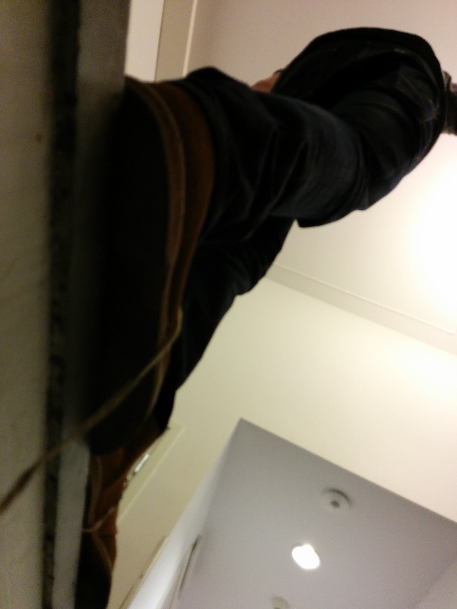3. Slå en dansk
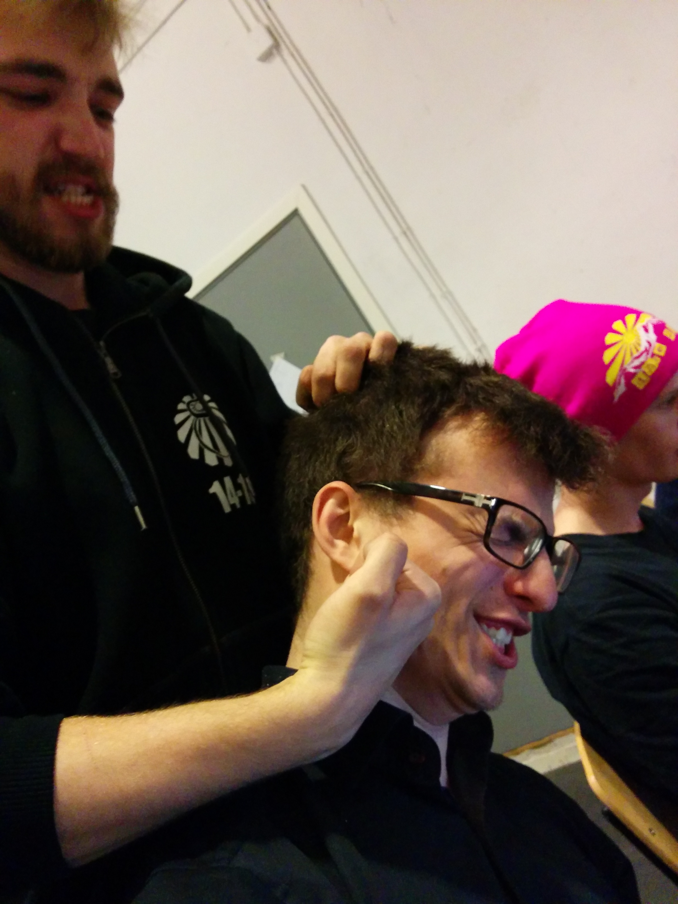4. Köra limbo
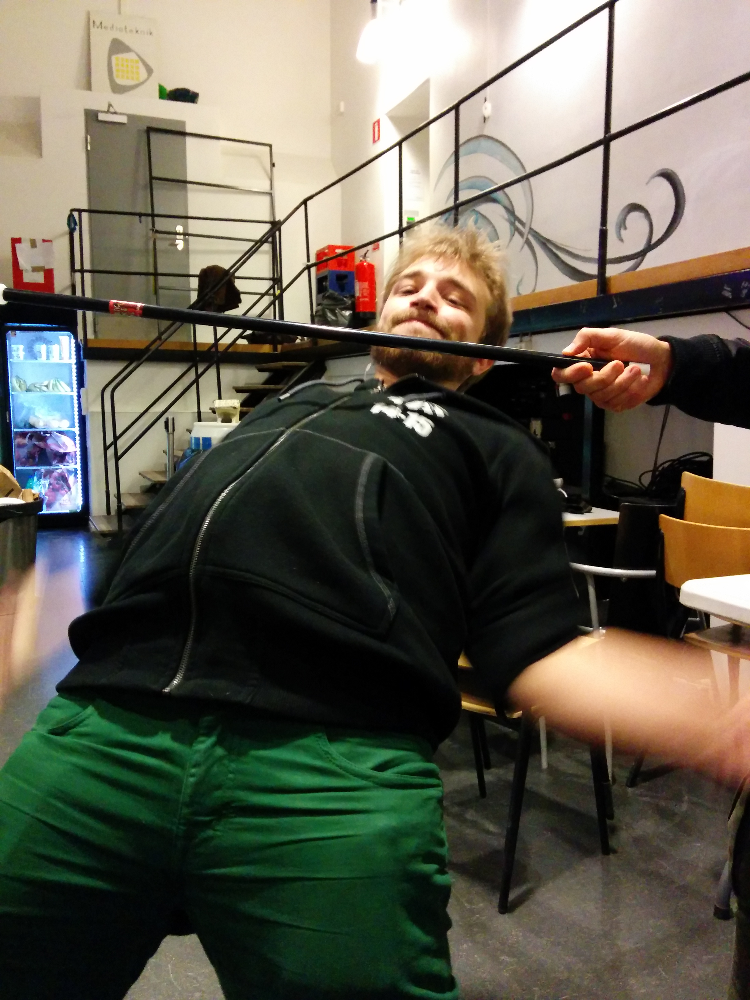5. Bada
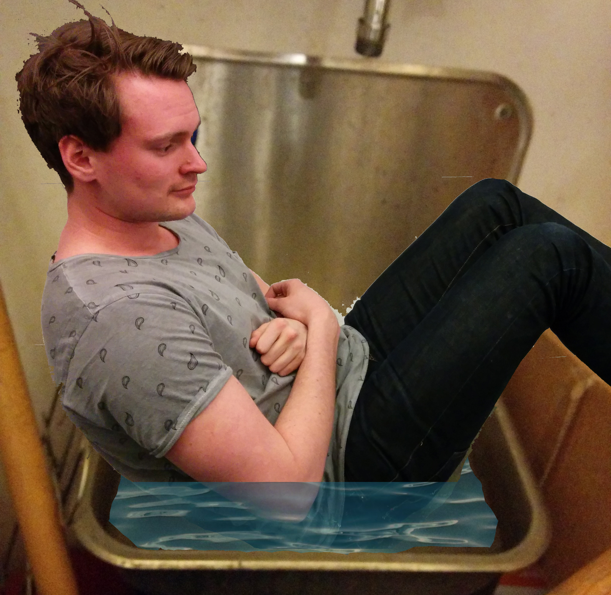6. Basta
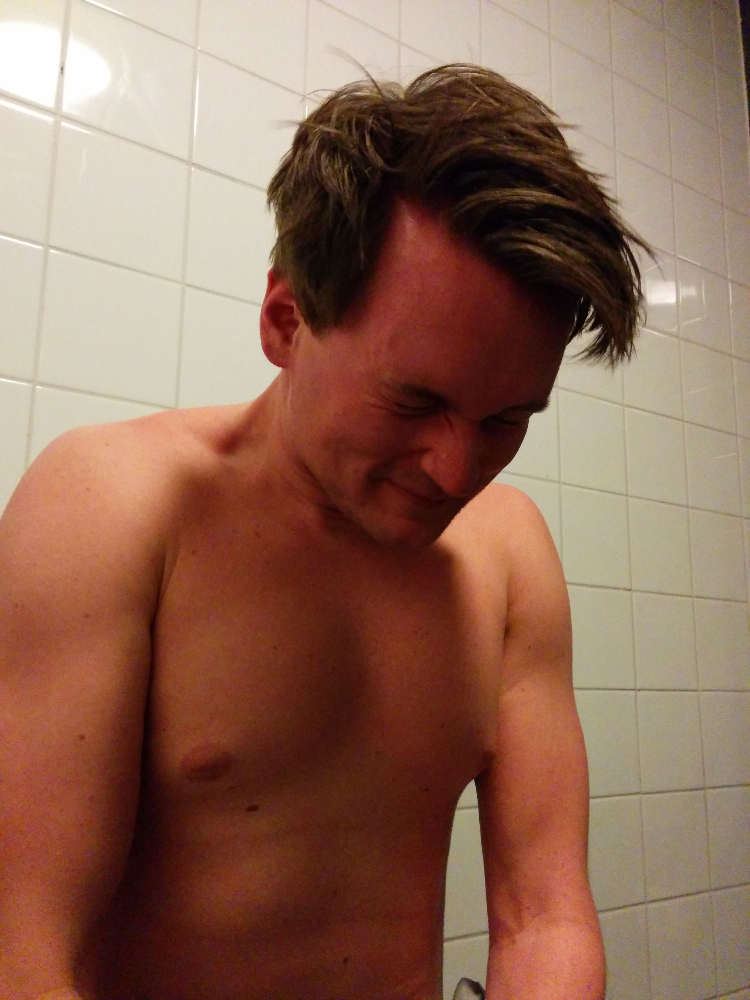7. Få massage
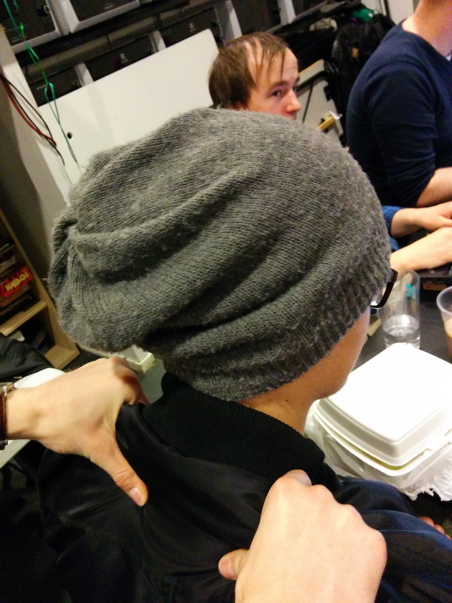8. Gnida körsbär
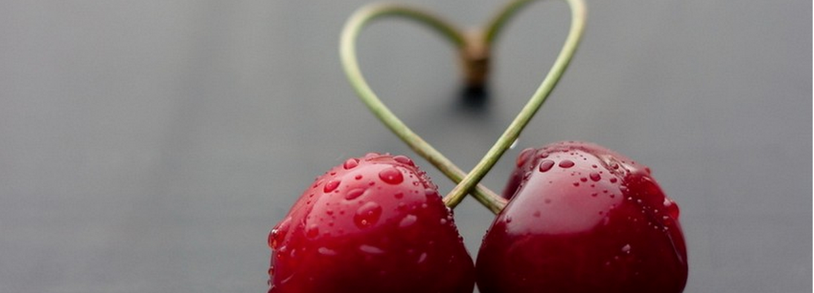9. Skära skinka
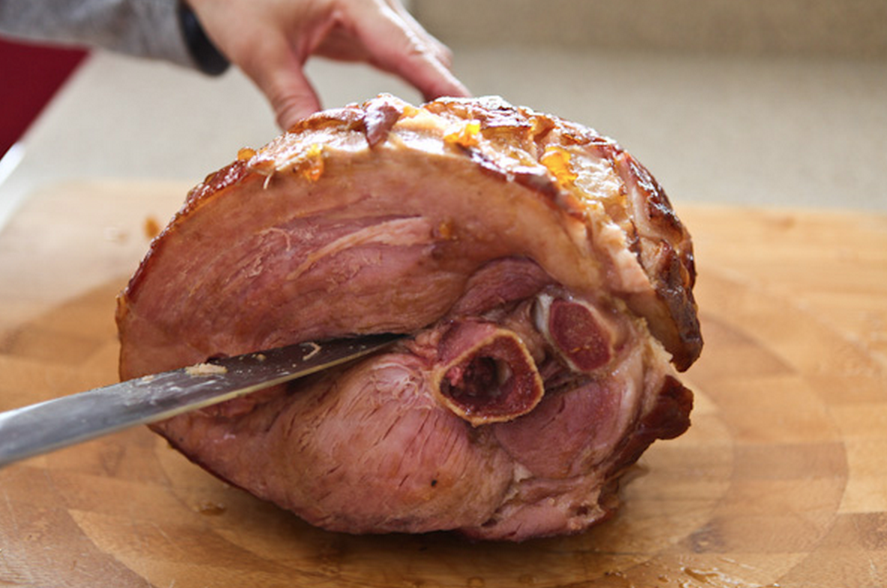10. Tugga tunga
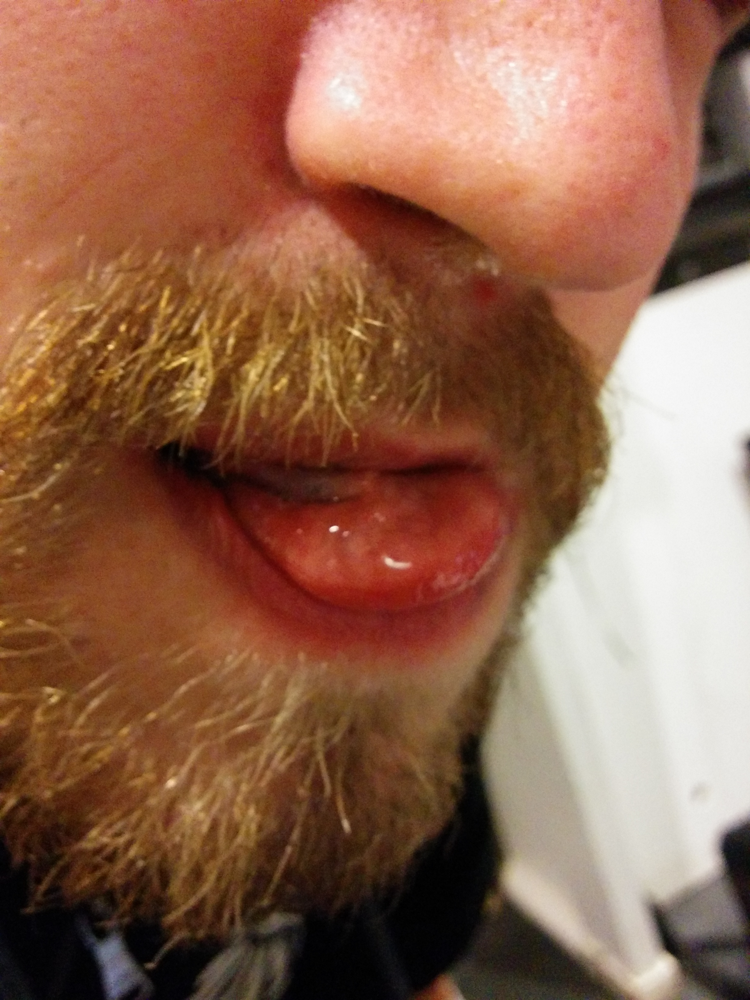11. Dela en chokladansjovis
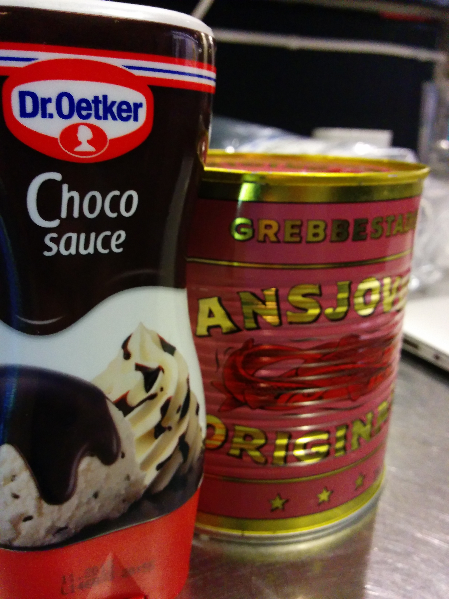12. Hitta grymma secondhand-kläder
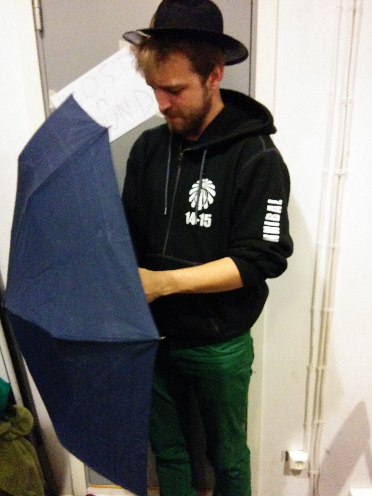13. Lägga korv i bröd
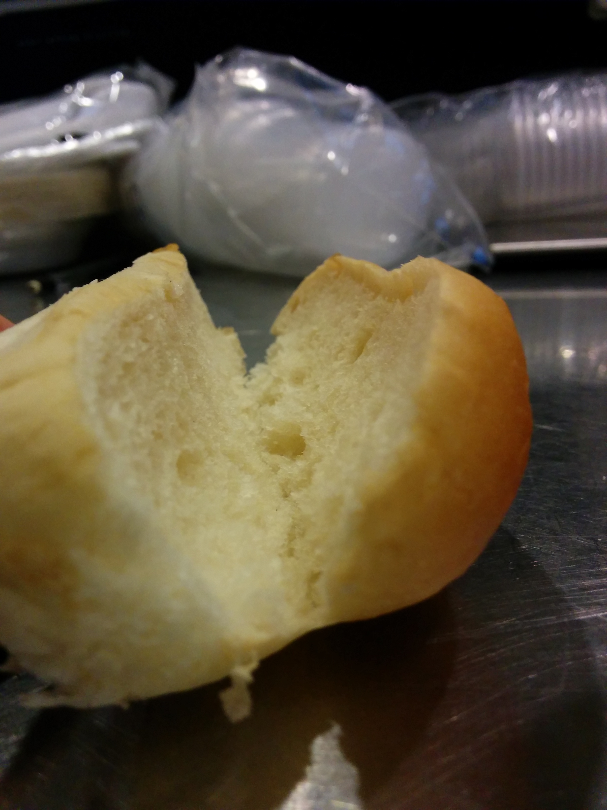Vilken sport är den vanligaste i Silicon Valley? Objektorientering!
Kvinna installerade en SSD – du kan inte ana vad som hände härnäst!
En dam, som vill förbli anonym, ville installera en SSD i hennes stationära dator. Damen, som i hädanefter benmämns som Petronella, hade köpt en SSD av modellen Samsumg 850 EVO från livsmedelsbutiken Konsum. Det hon inte hade en aning om var hur snett allting skulle gå.
Tidigare i veckan var det stor debatt inom data-Sverige. Enligt författaren Thor420BlazeXX på onlineforument Flashback var SSD-teknologin var, enligt honom "sjukt oupdaterad [sic] och alla som anväder den borde skjutas". Detta foruminlägg kom givetvis inte utan svar, och inom loppet av 2 timmar hade flera tusen svenskar kommenterat, alltifrån mikeaveli132's inspirerande kommentar "men lolll vem pallar SSD" till DinMama som menar att "Alla borde ha gått över till SSD för länge sedan, kom igen, det är fan 2009 snart".
Professor H. G. Engelbert från 4chan ökända /b/ ville också vara med i debatten. Enligt hans vetenskappliga studie "Memes: WTF are they, and how do I hold all these lemons?" dedikerar han ett kapitel till SSD. Han tycker att SSD's är nice.
Det som hände när vårhuvudperson Petronella skulle installera sin SSD var att datorn startade mycket snabbare än tidigare.
7 saker som Margot Wallström rasar över att Sverige kan sälja till Saudiarabien
Trojanska Dalahästar
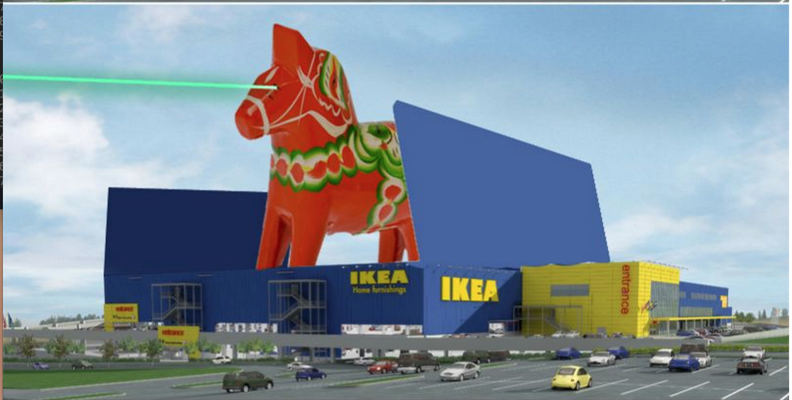Det främsta problemet med vapenexport till krigsförande länder som bryter mot mänskliga rättigheter är ju att aftonbladet upptäcker det hela. Vad skulle de egentligen kunna kritisera om försäljningen av stora dalahästar? Ett förslag som tillochmed SD skulle kunna ställa sig bakom.
Toblerone

Denna ädla choklad kunde inte förhindra Mona Salin från att kandidera till statsminister, men den kanske kan omkullkasta en mellanösterndiktatur.
Rosa Ovvar
Kanske lika effektivt som en Carl-Gustav granatkastare, så kan en rosa overall göra de flesta förrvirrade.
Danmark
Om vi inte kan bygga en vapenfabrik i Saudiarabien, så kanske vi kan göra om Danmark till en vapenfabrik och sälja danmark till saudiarabien. Det finns inga begränsningar på internationell handel med avfall.
Simuleringsprogramm för aerodynamiska beräkningar
Detta är praktiskt taget ett vapen, men KTH tycker inte det. Och KTH är en ganska bra källa.
Återförsäljarelicens för Rakel (polisens nya kommunikationssystem)
Genom sälja Rakel till sina fiender för Saudiarabien ett övertag. När fienderna kommunicera med samma hastighet som den svenska polisen så kommer Saudiarabien att kunna köra över vem de vill.
MAGE
För att vinna militäriskt måste man inte bara ha fler soldater än sina fiender, man måste också ha en mer genomtänkt ekonomisk strategi. Med MAGE blir det en enkel match.
Vet ni vad de sa sista gången min dator gnällde? Bit är bit, och kommer alldrig tillbaka.
STUDENTERNA RASAR: LÖFVEN SVIKER META
Paj bästaste saker med pi
- Smaken
- Konsistensen
- Formen
- In...
Vilket av Microsofts OS är bäst på Tennis? Windows Server.
ALLT DU ALLTID VELAT VETA OM: PIZZOR I META

3 Potatisar som ser ut som Channing Tatum
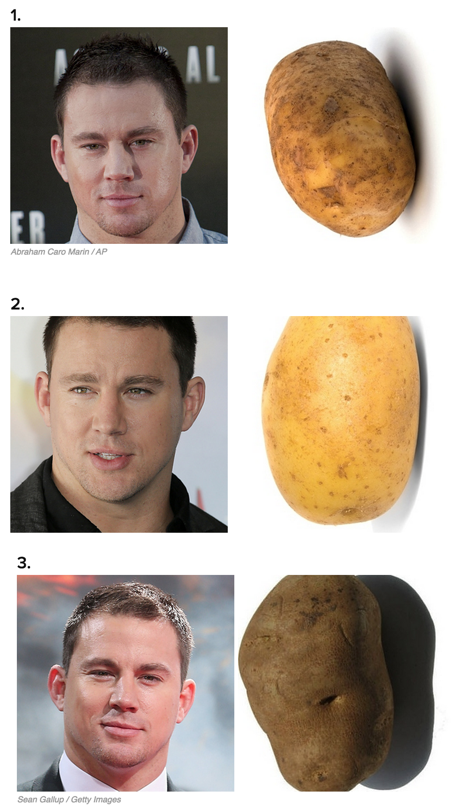 Källa: BuzzFeedAlla barnen var färdiga med sin programmeringsuppgift, utom Wembly, för hon programmerade i assembly.